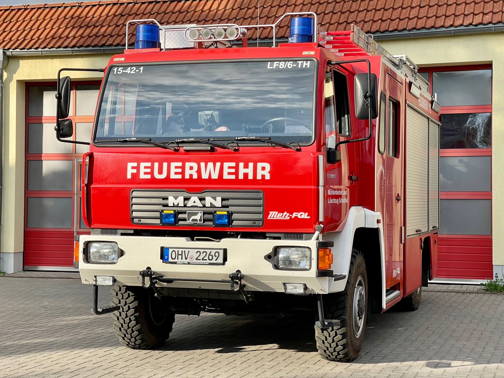

LZ-Schönfließ
Löschzug Schönfließ

Zugführer:
Herr René Schröder
Gegründet: 1904
Einsatzabteilung: 18 Kameraden*innen
Jugendabteilung: 15 Kameraden*innen
Fahrzeuge
LF-10/6 TH (Florian Oberhavel 15/42-01)TLF-W BB (Florian Oberhavel 15/24-2)
KdoW (Florian Oberhavel 15/14-4)
LF-10/6 TH
Löschgruppenfahrzeug (LF-10/6 TH) der FF Schönfließ,
Mühlenbecker Land
Fahrgestell: MAN LE 180 C
Aufbau: FGL-Metz (Rosenbauer)
Baujahr: 2002

TLF-W BB
Tanklöschfahrzeug (TLF-W BB) der FF Schönfließ,
Mühlenbecker Land
Fahrgestell: Zentralrohrrahmen
Aufbau: TATRA
Baujahr: 2022

KdoW
Kommandowagen (KdoW) der FF Schönfließ,
Mühlenbecker Land
Fahrgestell: Volkswagen T4 Synchro
Baujahr: 2003